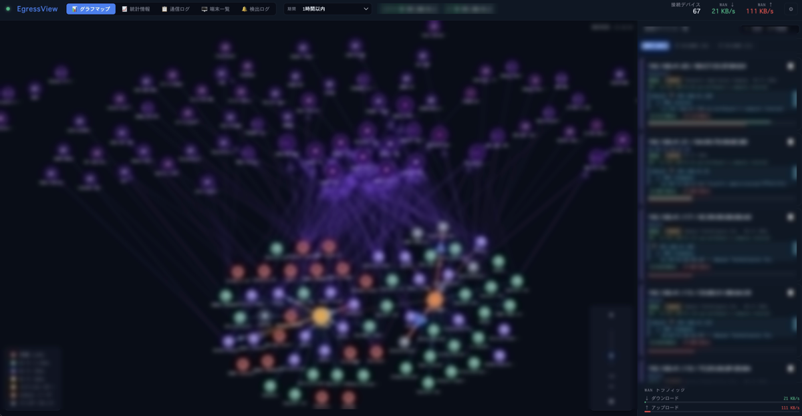
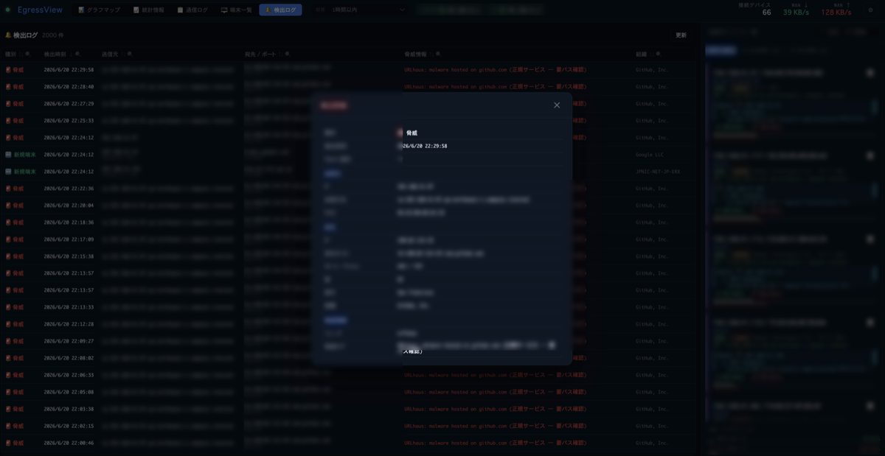

前提を変える
「入らせない」だけを前提にすると、入られた瞬間に打つ手がなくなります。
パッチ、認証、境界。どれも必要ですが、どれも破られます。破られた前提で設計する方が現実的です。
盗まれたデータは送信されて初めて失われます。指令を受け取る通信がなければ、多くの攻撃は先へ進めません。
ファイアウォールもWAFも、多くは「入ってくるもの」を見ています。出ていくもの、つまりアウトバウンド通信は、静かに通り抜けます。
宛先だけでは、もう区別がつきません
攻撃者は正規のクラウドサービスを中継に使います。宛先は「信頼できるドメイン」に見えます。
ある端末が、大手CDNへ5分おきに小さな接続をしている。これは何ですか？
宛先だけでは答えられません。ソフトウェア更新の確認かもしれず、指令サーバーへの定期通信かもしれない。どちらも同じ宛先を使えます。
答えを分けるのはどのアプリが接続したかです。EgressView が記録するのは、そこです。
| 見えるもの | 宛先だけの場合 | アプリ名がある場合 |
|---|---|---|
cdn.example.net — 5 min |
判断できない | 更新エージェント。正常 |
cdn.example.net — 5 min |
判断できない | 心当たりのないプロセス。調べる価値がある |
3つの始め方
Hub・Mac Agent・Windows Agent。AgentだけならルーターもHubも不要です。Hubへ送るかどうかはAgent側で選べます。
EgressView Agent for Mac
そのMacの外向き接続を、接続したアプリの名前とともに記録します。
- どのアプリが、どの国・ドメイン・IPへ
- 脅威フィードとの照合はMacの中で完結
- 記録が途切れた時間は、途切れたと表示する
EgressView Agent for Windows
そのPCの外向き通信をアプリ別に記録し、ローカルで表示します。Hubへの送信は任意です。

- Windowsサービスが通信を観測する
- アプリ・宛先・データ量を端末内に保存
- Hubへの送信は明示的に有効化する


やらないこと
監視ツールを入れるということは、そのツールを信用するということです。だから、何をしないかを先に書きます。

自分に必要かどうか
向いている
- 自分のMacやWindows PCが何と通信しているか知りたい
- 記録を自分の手元に置きたい
- 家庭・小規模オフィスのネットワークを把握したい
- Yamaha RTX か Cisco IOS のルーターがある（Hubを使う場合）
向いていない
- 通信の遮断や防御を求めている
- Linux用Agentが必要（現在はMacとWindowsのみ）
- 上記以外のルーターしかない（Hubを使う場合）
- 運用を任せられるクラウドサービスが欲しい
よくある問い
Macのどのアプリが、どこへ通信しているか調べたい
EgressView Agent を入れると、プロセスごとの外向き接続がそのまま記録されます。lsof や nettop と違い、見ている瞬間だけでなく過去にさかのぼって「どのアプリが、いつ、どこへ」を読めます。
アプリごとの通信先を、あとから確認できますか
できます。既定で直近14日ぶんの生の記録を持ち、それより古いものは時間単位に畳んで残します。「先週の火曜にこのアプリはどこへ出ていたか」に答えられます。
WindowsでもHubなしで利用できますか
できます。Windows AgentはそのPCの通信をローカルに記録します。Hubへの送信は明示的に有効化するまで始まりません。現在のWindows MSIは未署名なので、導入前にダウンロードページのチェックサムを照合してください。
通信の中身は読まれますか
読みません。記録するのは宛先・ポート・プロセス名・時刻・バイト数といったメタデータだけです。ペイロードは復号も保存もしません。
知らない宛先に通信していないか知りたい
公開されている脅威情報リストと照合し、一致した接続を印します。Agentの照合はその端末内で行い、あなたの通信先を照合のために第三者へ送りません。
ファイアウォールと何が違いますか
ファイアウォールは通すか止めるかを決めます。EgressView は何も止めません。出ていったものを記録し、あとで読めるようにします。防げなかったときに、何が起きたかを言えるようにするための道具です。
無料ですか、ソースは読めますか
どちらもはいです。ソースはGitHubで公開しています。Mac AgentはDeveloper ID署名・公証済みです。Windows AgentのMSIは現在未署名なので、チェックサムを確認してください。
始める
使う環境を選んでください。AgentだけならHubもルーターも不要です。
- Mac: 署名・公証済みの.pkgを入れ、macOSのネットワーク監視を承認します。
- Windows: MSIのチェックサムを照合し、管理者としてインストールします。現在のMSIは未署名です。
- Hub: Node.js 22以降で起動します。ルーターを使う場合はSSHから登録します。